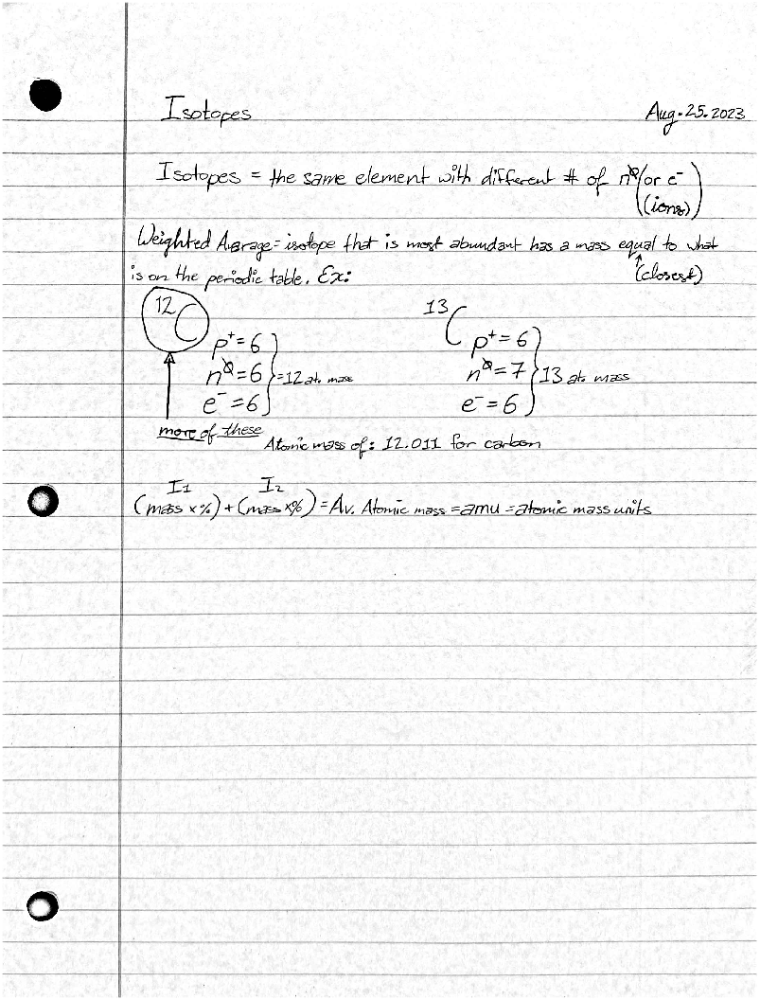
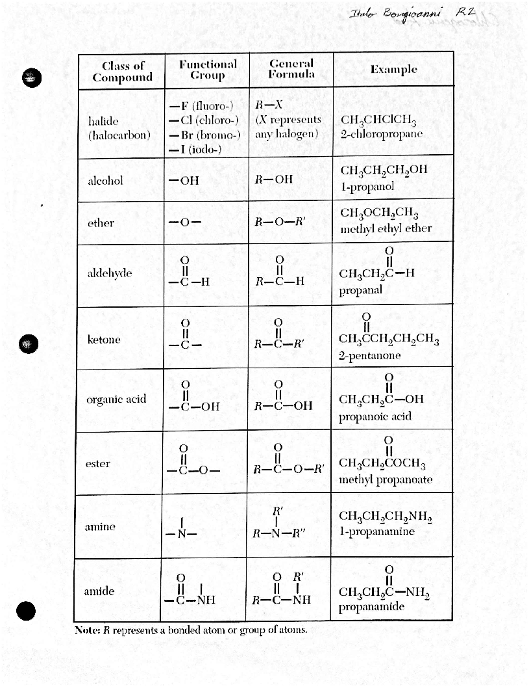

Even though I have notes from the honors class, they should still be applicable to the standard class. (If they are even valid for the honors class anymore. They're like 2-3 years old when I wrote this.)
These are the simple notes that we took throughout the year. They're really important, but we got more stuff as work-packets rather than notes.

Here are a few handouts that we got in class that I thought we pretty essential. And losable. So maybe you can use them if you lose yours. Just pretend like you wrote all the stuff on it.
